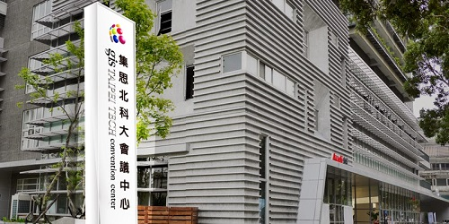

Conference Rooms
Spring 2019: Question 19 (use C language to write this program)

A convention center has a number of conference rooms that are open for events 24/7.
However, since the convention center has many users, the usage times of the conference rooms often clash. The management of the convention center has to decide the events whose times do not clash, so that users can hold those events as planned in the convention center. At the same time, the management hopes for maximum utilization of the conference rooms in the convention center and achieve the highest possible usage time of the conference rooms as well as host as many events as possible.
Input instructions:
- First, input the number of conference rooms.
- Next, input the number of events N.
- After that, input N lines of data, each containing three numbers, in order: Event ID, Start Time, End Time.
Output instruction: Output two solutions (in the form of an integer, with each solution in a new line):
- First solution: Output the longest possible usage hours from all the conference rooms.
- Second solution: Output the maximum number of events that can be held in the convention center.
| Sample Input | Expected Output |
|---|---|
|
2 2 1 8 9 2 9 10 |
2 2 |